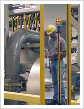
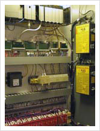

Three reasons why industrial owners making their plants and processes safer are:
- Wider acceptance of owners' moral responsibility to provide safe work places
- Increasing regulatory scrutiny
- Greater awareness of total costs of an industrial accident, which include...
- Plant downtime
- Litigation costs and damages
- Executive and staff distraction & diminished moral
- Insurance premium increases
- Emergency or enforced safety up-grades cost more than planned ones
- Lost productivity while replacement workers are hired and ramp-up
For over 30 years DST has been employing industrial automation technologies and
safe thinking to make our customers' plants and processes less
hazardous and fully OSHA-compliant. We accomplish this by implementing
control-based solutions designed by our own safety team, or by our customers'
safety specialists. These safety solutions can involve our assistance
in original system design, DST-retrofitted safety systems, DST-designed
and installed hard guarding (barriers), safety-specific updates of O&M
documentation, and safety-specific operator training.
For customers requiring formal or more comprehensive safety audits and risk assessments, DST has partnered with Lewis Bass International (LBI), Safety Consultants (http://www.lewisbass.com) to provide fully OSHA and/or EU compliant single-source safety solutions. LBI provides safety consultation anywhere in the world and DST can provide safety system integration anywhere in the world.
Examples of DST-implemented safety systems include...
- Toxic Gas Delivery Systems
- Molded Fiber and Robotic Processes
- Pharmaceutical Manufacturing Systems
- Steel Pipe Mill
- Packaging Systems
- Fruit Pitting Systems
- Machine Tool Hard and Soft Guarding
|
|


|